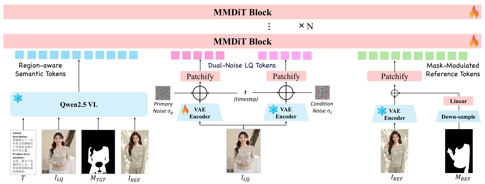
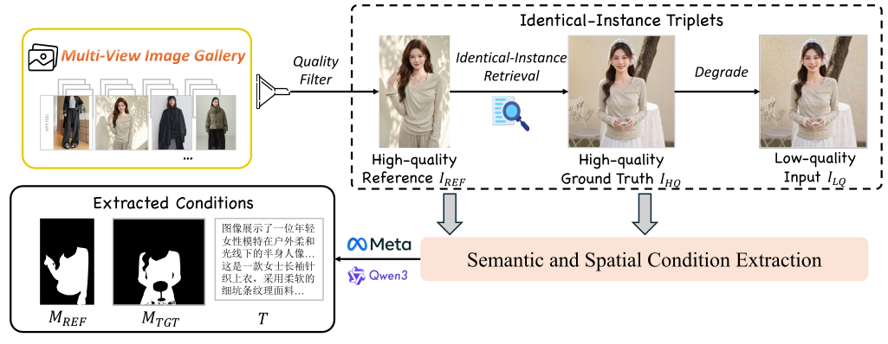

About the project
Abstract
Diffusion-based real-world image super-resolution (SR) achieves
impressive perceptual quality but inherently suffers from severe
texture hallucination. To overcome this limitation, we propose
GraftSR, a texture-reference-guided generative SR
framework that leverages reference images of the identical instance
to anchor the restoration of authentic textures. However, severe
spatial misalignment between low-quality inputs and their references
poses significant challenges, often leading to ambiguous transfer
targets and background feature leakage. To address these issues,
GraftSR employs a novel dual-mask reference guidance
mechanism that systematically decouples the cross-view texture
injection process. By explicitly isolating what
authentic textures to extract from the reference and precisely
localizing where to apply them within the target,
GraftSR achieves robust texture transfer without relying on brittle
spatial alignment. Furthermore, to bridge the critical gap in
appropriate training data, we construct
TexRefSR-141K, the first large-scale dataset
providing high-quality reference tuples equipped with complementary
spatial masks. Extensive experiments on our newly established
benchmark, TexRefSR-Eval, demonstrate that GraftSR
sets a new state-of-the-art. Notably, it reduces LPIPS by 20.2%
over top-performing baselines, achieving superior
reference-faithful restoration.
01
Texture-Reference-Guided SR
We propose GraftSR, a novel texture-reference-guided
generative SR framework that suppresses generative hallucinations
and achieves highly faithful texture transfer from cross-view
identical-instance references.
02
TexRefSR-141K & Benchmark
We construct TexRefSR-141K and TexRefSR-Eval,
the first large-scale dataset and benchmark suite providing
high-quality identical-instance tuples equipped with
complementary spatial masks.
03
State-of-the-Art Results
Extensive experiments demonstrate that GraftSR establishes a new
state-of-the-art in reference-guided SR, bridging the gap between
perceptual quality and texture fidelity for faithful texture
restoration.
Method
Method Overview
Built upon an MMDiT backbone, GraftSR introduces a novel
dual-mask reference guidance mechanism that decouples cross-view
texture injection into two explicit questions —
what to reference and
where to transfer — eliminating the reliance on
brittle spatial alignment between the low-quality input and the
identical-instance reference.

Overall architecture of GraftSR. Mask-modulated reference tokens
and region-aware semantic tokens jointly condition cascaded MMDiT
blocks to denoise the dual-noise latent, which is distilled into
an efficient one-step SR model.
Semantic & Spatial Condition Extraction
A vision-language model jointly analyzes
ILQ and IREF to
identify the shared instance and generate a unified caption
T. SAM3 then performs zero-shot segmentation to obtain
the target mask MTGT and the reference
mask MREF, explicitly localizing the
identical instance across both views.
Mask-Modulated Reference Tokens · What
IREF is encoded by a frozen VAE, and its
latent is additively modulated by the downsampled reference
mask. This soft intervention isolates authentic texture-bearing
regions from irrelevant backgrounds without disrupting the
continuous latent space.
zref = EVAE(IREF) +
φ(D(MREF))
Region-Aware Semantic Tokens · Where
A frozen Qwen2.5-VL encoder jointly embeds the low-quality
input, the target mask, the reference, and the caption into
region-aware semantic tokens that designate precisely where the
extracted textures should be applied.
zsem =
EVLM(ILQ, MTGT,
IREF, T)
One-Step Adversarial Distillation
A dual-noise strategy balances perceptual quality and texture
fidelity. The noisy target tokens are concatenated with the
extracted conditions along the sequence dimension, and the
model is trained as a one-step SR network optimized with MSE,
DISTS, and a relativistic GAN loss driven by a Wan2.1-1.3B
discriminator.
Prevailing reference-based SR datasets merely pair semantically
approximate images. We instead exploit large-scale e-commerce
multi-view galleries, which uniquely capture strictly identical
instances across diverse viewpoints, and build
TexRefSR-141K through an automated VLM-driven
curation pipeline.

The proposed VLM-driven data curation pipeline. It retrieves
identical-instance triplets from multi-view galleries and
extracts the complementary masks and unified caption to support
authentic texture transfer.
Identical-Instance Triplet
Anchored on a quality-filtered HQ reference
IREF, the pipeline retrieves a multi-view
HQ ground truth IHQ of the same instance
and synthesizes ILQ via a high-order
degradation model — forming the core
{IREF, IHQ,
ILQ} triplet with genuine texture
correspondence rather than mere semantic resemblance.
Caption & Complementary Masks
The same condition extraction annotates each triplet with a
unified caption T and the complementary mask pair
{MREF, MTGT}. Both are
derived from the clearer IHQ, and random
morphological dilation keeps delicate boundaries
(e.g., lace and decorative edges) robust.
Rigorous Quality Assessment
Candidates are filtered before masking: embedding similarity
discards mismatched pairs, a quality predictor eliminates
degraded samples, and extreme close-ups that lose recognizable
instance identity are rejected — yielding over
141K high-quality tuples across
61K diverse fashion products.
1-to-N Mapping & TexRefSR-Eval
Each reference maps to multiple target ground truths, yielding
rich cross-view texture correspondences. We further curate
TexRefSR-Eval with 300 manually verified
cases: 250 synthesized samples for full-reference evaluation
and 50 naturally degraded real-world samples.
Evaluation
Quantitative Results
| Type |
Method |
| LPIPS ↓ |
DISTS ↓ |
PSNR ↑ |
SSIM ↑ |
MUSIQ ↑ |
NIQE ↓ |
CLIPIQA ↑ |
MANIQA ↑ |
Open-source
Generative SR
|
OSEDiff |
0.2326 |
0.1444 |
28.3752 |
0.8471 |
65.2201 |
4.8256 |
0.6631 |
0.5250 |
| SUPIR |
0.2208 |
0.1321 |
29.3151 |
0.8382 |
61.5577 |
5.2317 |
0.5922 |
0.5225 |
| DiT4SR |
0.3816 |
0.2147 |
25.6121 |
0.8071 |
33.1845 |
7.3649 |
0.5769 |
0.4253 |
| ODTSR |
0.1983 |
0.1048 |
29.5098 |
0.8431 |
69.2601 |
4.7789 |
0.6176 |
0.5129 |
| PiSA-SR |
0.2247 |
0.1343 |
28.5478 |
0.8458 |
66.7754 |
4.6765 |
0.6831 |
0.5338 |
| VOSR-1.4b |
0.2349 |
0.1247 |
28.3661 |
0.8290 |
71.1585 |
4.3381 |
0.6873 |
0.5523 |
Open-source
Reference-based SR
|
RefSR |
0.4384 |
0.2685 |
28.6190 |
0.8297 |
24.0680 |
8.1108 |
0.4106 |
0.3259 |
| AdaRefSR |
0.6071 |
0.2785 |
16.2155 |
0.7154 |
32.1215 |
7.7052 |
0.5645 |
0.4367 |
| GarmentZoom |
0.4156 |
0.2643 |
25.8811 |
0.7255 |
34.1616 |
6.1379 |
0.4360 |
0.4160 |
Commercial
Editing Models
|
GPT-Image-2 |
0.4474 |
0.2154 |
18.3255 |
0.7665 |
34.4500 |
7.4755 |
0.5781 |
0.4355 |
| Gemini-3-Pro |
0.2065 |
0.1034 |
26.7874 |
0.8222 |
64.9845 |
4.9920 |
0.6216 |
0.5048 |
|
Graft (Ours) |
0.1583 |
0.0986 |
30.1060 |
0.8494 |
69.8535 |
4.9346 |
0.7275 |
0.5270 |
Quantitative comparison on the TexRefSR-Eval-Syn
benchmark, where ground-truth references are available. Both
full-reference and no-reference metrics are reported.
Red bold and
blue underline denote the best and the
second-best results.
| Type |
Method |
| NIQE ↓ |
MUSIQ ↑ |
CLIPIQA ↑ |
MANIQA ↑ |
PQ ↑ |
TC ↑ |
Overall ↑ |
Open-source
Generative SR
|
OSEDiff |
3.9329 |
70.5668 |
0.6395 |
0.6292 |
3.320 |
1.740 |
2.530 |
| SUPIR |
4.2105 |
59.6691 |
0.4778 |
0.5741 |
3.380 |
1.960 |
2.670 |
| DiT4SR |
3.7190 |
72.5782 |
0.6428 |
0.6485 |
3.720 |
2.040 |
2.880 |
| ODTSR |
4.2809 |
71.5261 |
0.6140 |
0.6580 |
2.760 |
1.560 |
2.160 |
| PiSA-SR |
4.2523 |
65.5855 |
0.4913 |
0.5789 |
2.840 |
1.660 |
2.250 |
| VOSR-1.4b |
3.8273 |
69.7636 |
0.6227 |
0.6399 |
3.880 |
2.380 |
3.130 |
Open-source
Reference-based SR
|
RefSR |
5.0782 |
53.8617 |
0.3251 |
0.5030 |
2.200 |
1.280 |
1.740 |
| AdaRefSR |
5.7189 |
46.2674 |
0.3625 |
0.5087 |
2.580 |
1.560 |
2.070 |
| GarmentZoom |
5.6298 |
31.4101 |
0.3625 |
0.4417 |
2.380 |
1.840 |
2.110 |
Commercial
Editing Models
|
GPT-Image-2 |
4.9825 |
65.9262 |
0.5667 |
0.6159 |
3.020 |
2.100 |
2.560 |
| Gemini-3-Pro |
5.1077 |
56.5937 |
0.4633 |
0.5277 |
3.880 |
2.700 |
3.290 |
|
GraftSR (Ours) |
3.9881 |
73.0045 |
0.6409 |
0.6507 |
3.980 |
2.840 |
3.410 |
Quantitative comparison on the
TexRefSR-Eval-Real benchmark with no-reference
metrics and VLM-based metrics.
| Method |
PSNR ↑ |
SSIM ↑ |
LPIPS ↓ |
MUSIQ ↑ |
MANIQA ↑ |
| SUPIR |
23.65 |
0.6620 |
0.3541 |
62.09 |
0.5780 |
| DiT4SR |
23.50 |
0.6657 |
0.3215 |
67.76 |
0.6564 |
| OSEDiff |
25.15 |
0.7341 |
0.2920 |
69.08 |
0.6335 |
| PiSA-SR |
25.40 |
0.7418 |
0.2672 |
70.14 |
0.6551 |
| VOSR-1.4B |
25.23 |
0.7175 |
0.2732 |
70.58 |
0.6443 |
| ODTSR |
25.07 |
0.7361 |
0.2398 |
68.29 |
0.6622 |
| GraftSR (Ours) |
25.51 |
0.7512 |
0.2559 |
70.37 |
0.6676 |
RealSR
| Method |
PSNR ↑ |
SSIM ↑ |
LPIPS ↓ |
MUSIQ ↑ |
MANIQA ↑ |
| SUPIR |
25.09 |
0.6460 |
0.4243 |
58.79 |
0.5471 |
| DiT4SR |
25.40 |
0.6657 |
0.3869 |
65.75 |
0.6287 |
| OSEDiff |
27.92 |
0.7835 |
0.2968 |
64.65 |
0.5895 |
| PiSA-SR |
28.32 |
0.7804 |
0.2960 |
66.11 |
0.6146 |
| VOSR-1.4B |
27.88 |
0.7413 |
0.3260 |
66.04 |
0.6053 |
| ODTSR |
28.14 |
0.7736 |
0.2592 |
62.86 |
0.6227 |
| GraftSR (Ours) |
29.04 |
0.8052 |
0.2858 |
66.73 |
0.6376 |
DRealSR
Quantitative comparison on general real-world SR. Our GraftSR still
achieves strong generalization in both fidelity and perceptual
quality even without reference images.
Visualizations
More Qualitative Results

More qualitative comparisons on the
TexRefSR-Eval-Syn dataset, where low-quality
inputs are produced by the synthetic degradation model. Guided by
the reference, our method restores textures that are more faithful
to the ground truth, recovering fine patterns and structural
details that other methods either over-smooth or hallucinate
incorrectly.

More qualitative comparisons on the
TexRefSR-Eval-Real dataset, which contains
real-world low-quality images without ground truth. Our method
produces perceptually sharper results whose textures remain
consistent with the reference, whereas other methods tend to yield
blurry or unfaithful reconstructions.

More qualitative comparisons on general real-world SR benchmarks
(RealSR and DRealSR). Although no reference is available in this
setting, our method still generalizes well to natural scenes and
recovers clean, realistic details that are competitive with or
superior to state-of-the-art general SR methods.